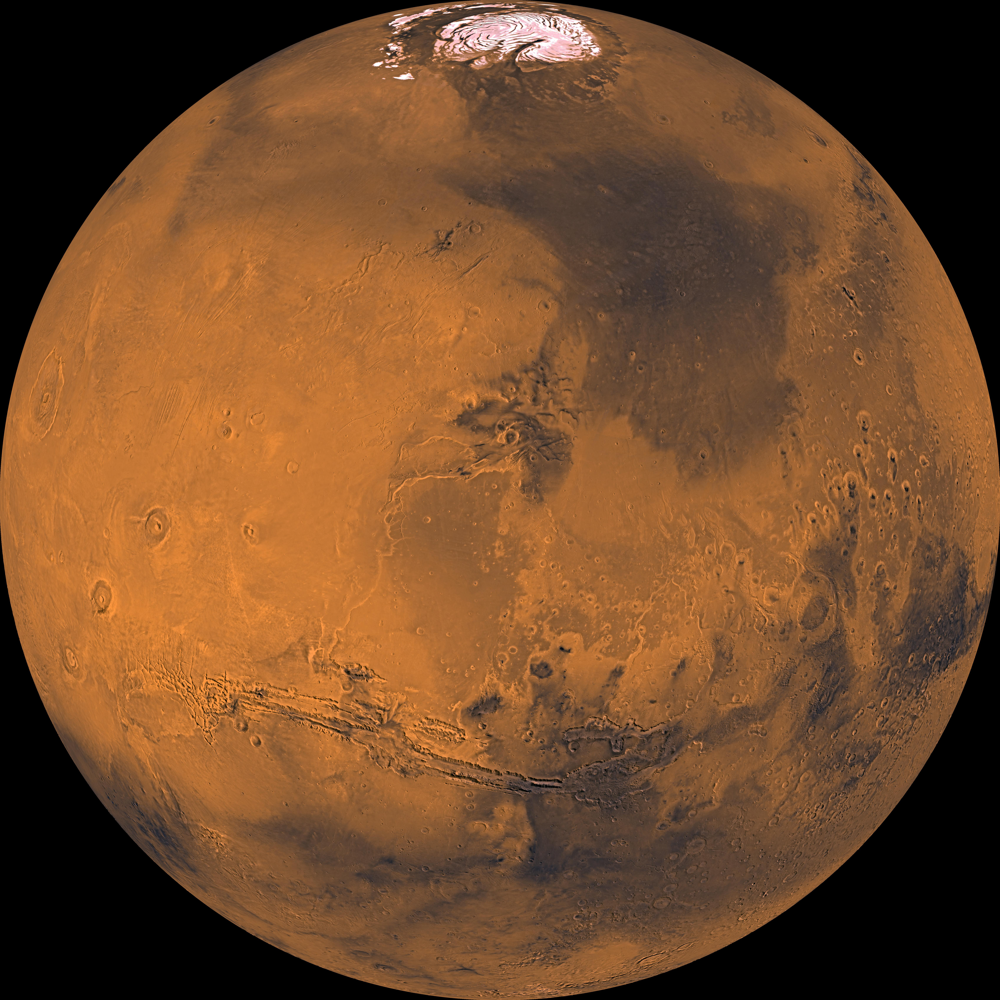
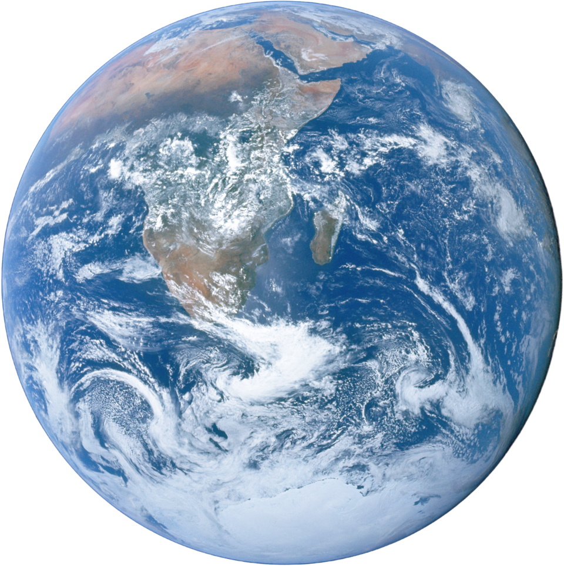
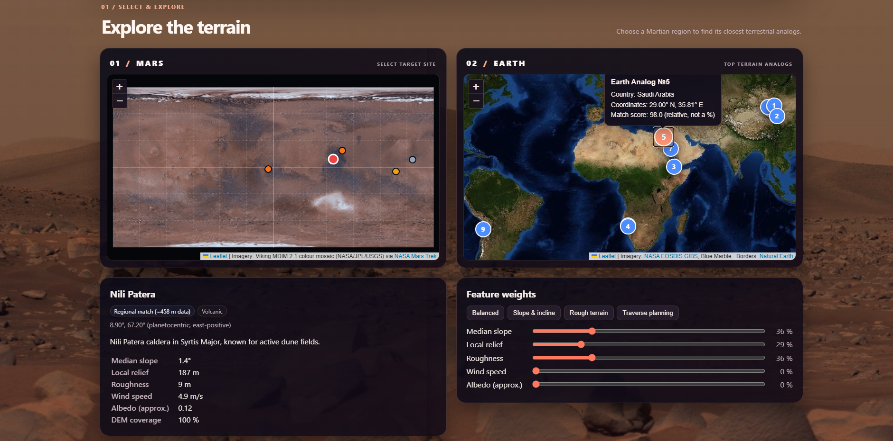
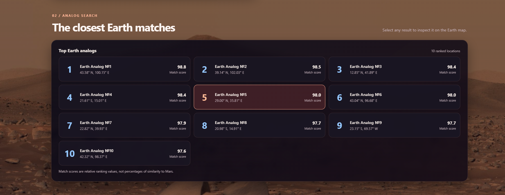
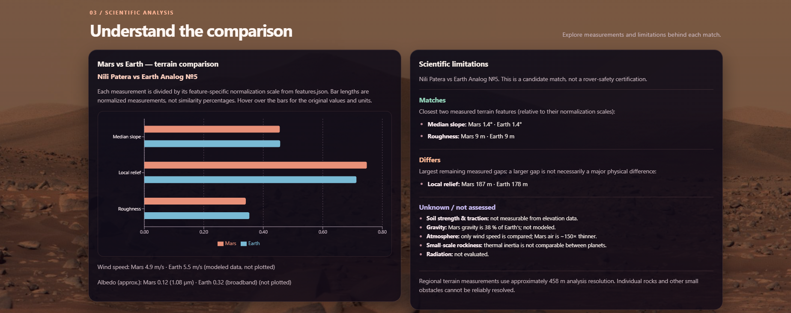

NASA SPACE APPS CHALLENGE · 2026
NEW
HORIZON
Mars-to-Earth Analog Finder
Find Mars — on Earth.
Team New Neighbours
01 // INTRODUCTIONS
Meet the crew
AI
Albert Ivanitzov
Scientific data researcher
THERMAL · ALBEDO
BH
Boris Hristov
Geospatial data engineer
MARS SITES · GEOLOGY
BG
Boyan Georgiev
Fullstack software engineer
APP · EARTH PIPELINE
KM
Kristiyan Miltiyadov
Data engineer
WIND · PRESSURE
MI
Momchil Indzhov
Frontend & UI/UX developer
INTERFACE · DESIGN
02 // THE CHALLENGE
Every mission to Mars is rehearsed on Earth first.
But where on Earth is most like the place we are going?
OUR CHALLENGE
Finding the best Earth analogs for Mars rover mobility & surface testing — with open space data.
03 // WHAT INSPIRED US
Mars is already tested on Earth
Mojave DesertUSA · rover driving tests
Atacama DesertChile · driest place on Earth
Devon IslandCanada · Arctic crater research
UtahUSA · Mars Desert Research Station
These places were chosen by experience and reputation —
not by a measured, planet-wide comparison.
What if anyone could search the whole Earth for their Mars?
04 // THE PROBLEM
Mars is not one place
Victoria Crater19 m relief · 0.2°
Athabasca Valles56 m · 0.5°
Gale · Bradbury Landing179 m · 1.1°
Nili Patera187 m · 1.4°
Jezero Western Rim533 m · 5.3°
One famous analog can't fit every mission.
Teams need the right Earth twin for their site — fast, open and backed by data.
05 // OUR SOLUTION
Introducing NEW HORIZON
◉
Mars terrain
5 landing & science sites
MOLA · CTX · HRSC elevation
⌖
Terrain fingerprint
10 × 10 km · ~455 m grid
same code on both planets
◍
Earth screening
0 cells in 29 regions
MODIS + Copernicus filters
✦
Bare-ground twins
0 eligible cells
≥ 70 % unvegetated
★
Ranking
Weighted distance
top 10, 50 km apart
06 // THE MATCH SCORE
Transparent maths, no black box
distance = √ Σ wᵢ · ((Marsᵢ − Earthᵢ) / scaleᵢ)²
score = 100 / (1 + distance)
| Jezero Western Rim | Puna de Atacama, Chile |
|---|
| Median slope | 5.32° | 5.35° |
| Local relief | 533 m | 534 m |
| Roughness | 45.8 m | 46.9 m |
Scored: slope · relief · roughness (+ optional wind & albedo). A ranking value — not a “% Mars”.
07 // USER EXPERIENCE · 1
Pick a site. Tune the mission.

1
2
3
4
- 1 Click a site on the Viking colour map of Mars
- 2 See its terrain fingerprint, measured from orbit
- 3 Choose what matters: presets & sliders
- 4 Earth twins appear instantly on the globe
08 // USER EXPERIENCE · 2
Ten twins, ranked — and explained


✔ Matches
≠ Differs
? Not comparable — and why
09 // WHAT NEW HORIZON FOUND
Mars sites and their Earth twins
Jezero Western Rim PerseverancePuna de Atacama, Chile97.4
Gale · Bradbury Landing CuriosityAfar, Ethiopia98.7
Victoria Crater OpportunityTaklamakan Desert, China99.6
Nili Patera volcanic calderaGobi, Mongolia + albedo → Harrat lava fields, Saudi Arabia98.8
Athabasca Valles young lava plainsGilf Kebir plateau, Sudan99.4
Top match per site with default weights. Scores are ranking values, not a % of similarity.
10 // INNOVATION & ORIGINALITY
Why it's new
01One code, two planets
The exact same terrain fingerprint runs on Mars and Earth elevation data.
02The whole planet, not a shortlist
0 locations in 27 regions and 25 countries are searched every time.
03Mission-tuned
Sliders and presets for slopes, rough ground, traverses, wind and albedo.
04Radically honest
Every match shows what matches, what differs and what cannot be compared.
11 // OUR PROGRESS
Mission log
0Earth cells screened
0eligible Earth twins
0desert & polar regions
0Mars sites, fully profiled
Data contractMars terrainEarth searchWeb appWind & thermalLaunch
12 // WHERE WE GO NEXT
The roadmap
Known limits today: ~455 m terrain (no single rocks) · no soil or traction data · modelled wind · site access not checked
🚀
Any point on Mars
Global Mars grid, not just 5 sites
Metre-scale terrain
HiRISE & CTX stereo for landing zones
Rocks & soils
Cross-calibrated thermal inertia
Mission modes
Rover · astronaut EVA · helicopter
Field-validated
Verify top matches with analog researchers
The Moon next
Artemis analogs with the same engine
Every journey to Mars begins on Earth.
NEW HORIZON
Find Mars — on Earth.
Albert Ivanitzov · Boris Hristov · Boyan Georgiev · Kristiyan Miltiyadov · Momchil Indzhov
THANK YOU